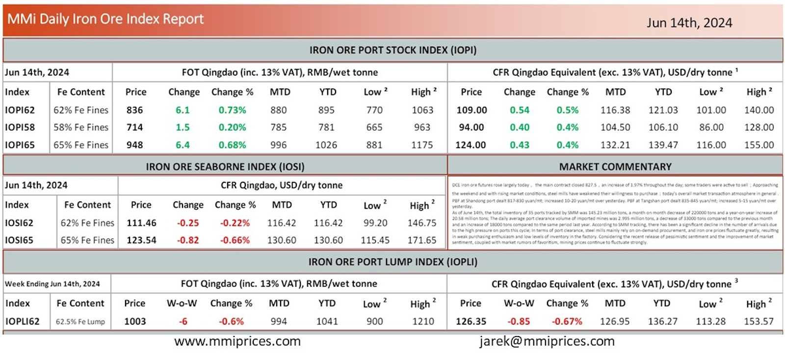

DCE iron ore futures rose largely today，the main contract closed 827.5，an increase of 1.97% throughout the day; some traderswere active to sell； pproaching the weekend and with rising market conditions, steel mills have weakened their willingness to purchase；today’s overall market transaction atmosphere in general. PBF at Shandong port dealt 817-830 yuan/mt; increased 10-20 yuan/mt over yesterday. PBF at Tangshan port dealt 835-845 yuan/mt; increased 5-15 yuan/mt over yesterday. As of June 14th, the total inventory of 35 ports tracked by SMM was 145.23 million tons, a month on month decrease of 220000 tons and a year-on-year increase of 20.58 million tons; The daily average port clearance volume of imported mines was 2.995 million tons, a decrease of 33000 tons compared to the previous month and an increase of 18000 tons compared to the same period last year. According to SMM tracking, there has been a significant decline in the number of arrivals due to the high pressure on ports this cycle; In terms of port clearance, steel mills mainly rely on on-demand procurement, and iron ore prices fluctuate greatly, resulting in weak purchasing enthusiasm and low levels of inventory in the factory. Considering the recent release of pessimistic sentiment and the improvement of market sentiment, coupled with market rumors of favoritism, mining prices continue to fluctuate strongly.

Download PDFSource: Metals Market Index (MMi)